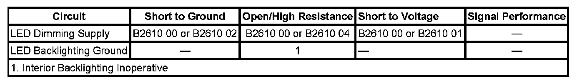

B2610
DTC B2610
DTC DESCRIPTOR
DTC B2610 00
Passenger Compartment Dimming 1 Circuit
DTC B2610 01
Passenger Compartment Dimming 1 Circuit Short to Battery
DTC B2610 02
Passenger Compartment Dimming 1 Circuit Short to Ground
DTC B2610 04
Passenger Compartment Dimming 1 Circuit Open
DIAGNOSTIC FAULT INFORMATION

Perform the Diagnostic System Check - Vehicle prior to using this diagnostic procedure. Initial Inspection and Diagnostic Overview
CIRCUIT/SYSTEM DESCRIPTION
When the instrument panel lamps dimmer switch is activated, a variable voltage signal is applied through the LED dimmer switch signal circuit to the body control module (BCM). The BCM then applies a message on the low speed GMLAN serial data communication circuit to the door switches to illuminate the switch backlighting. The BCM, driver door switch, and passenger door switch then applies a variable voltage signal through the LED dimming supply circuit to the components on that circuit.
CONDITIONS FOR RUNNING THE DTC
The ignition is ON.
CONDITIONS FOR SETTING THE DTC
The BCM, driver door switch, and passenger door switch detects a short to voltage, short to ground, or an open on the LED dimming supply circuit.
ACTION TAKEN WHEN THE DTC SETS
The BCM, driver door switch, and passenger door switch will cease attempts to dim or illuminate the LED lamps.
CONDITIONS FOR CLEARING THE DTC
- The conditions for setting the DTC are no longer present.
- A history DTC clears after 100 malfunction-free ignition cycles.
- The BCM receives the clear code command from the scan tool.
CIRCUIT/SYSTEM VERIFICATION
Ignition and park lamps ON, vary the interior lamp dimming switch from dim to full bright. The LED lamps should dim and then become full bright.
CIRCUIT/SYSTEM TESTING
1. Park lamps OFF, disconnect all of the LED dimming supply circuit lamp components on the circuit.
2. Park lamps ON, verify that DTC B2610 00, B2610 01, and DTC B2610 02 does not reset.
- If the DTC resets, test for a short to voltage, short to ground, or an open in the LED dimming supply circuit. If the circuit/connections test normal, replace the BCM, driver door switch, and passenger door switch as applicable.
3. Reconnect each component one at a time and test for DTC B2610 00, B2610 01 and DTC B2610 02.
- If the DTC resets, replace that particular component.
- If the DTC does not reset, replace the BCM.
REPAIR INSTRUCTIONS
Perform the Diagnostic Repair Verification after completing the diagnostic procedure.
- Refer to the appropriate replacement procedure for the component causing the condition.
- Control Module References for BCM, driver door switch, and passenger door switch replacement, setup, and programming. Verification Tests Programming and Relearning